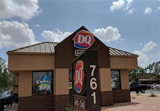
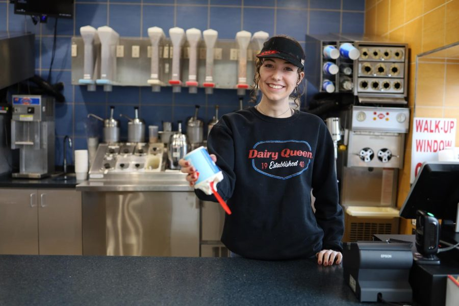
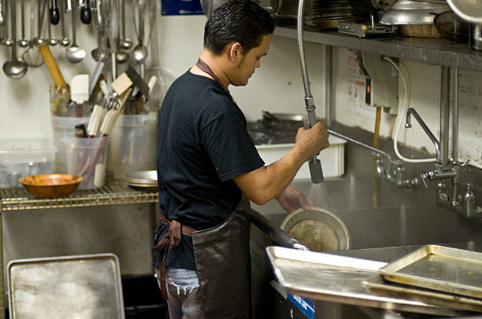
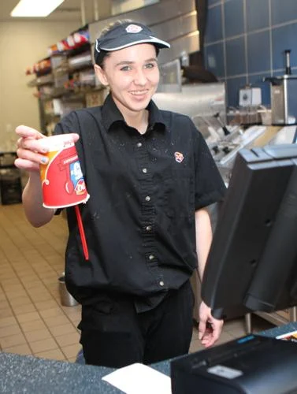

I Got A Job
At Dairy Queen

Over the summer I got a job working at a Dairy Queen which a family friend owns. I usually work the night shift and have to end up closing which sucks but at least I am making slightly above minimum wage to flip ice cream and clean tables. My favorite part of the job is definitely making sundaes idk why i like it so much. I also like going home and taking any ice cream we messed up on home for free.

My least favorite part about the job is most definitely closing dishes mostly due to the fact that it takes forever especially if you are slow like me and it can smell really bad which is unfortunate because I have a strong sense of smell. So if i can wiggle my way out of dishes best believe im doing it.

I dont have any pictures of me actually working this is the best I got